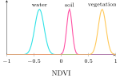

![\(\mathrm{NDVI}=\dfrac{\rho_{NIR}-\rho_{red}}{\rho_{NIR}+\rho_{red}}\in[-1,1]\)](m/e03d0d00fc9c51c89db87222e69a7378a2e44ccf.svg) exploits the contrast between red absorption by chlorophyll and high NIR reflectance of leaves: dense green vegetation gives 0.6–0.9, soil 0.1–0.2, water negative; the normalisation cancels much of the illumination variation.
exploits the contrast between red absorption by chlorophyll and high NIR reflectance of leaves: dense green vegetation gives 0.6–0.9, soil 0.1–0.2, water negative; the normalisation cancels much of the illumination variation.Definition
Same pattern for other surfaces: NDWI for open water, NDSI for snow, NBR (NIR, SWIR2) for burn severity.
Derivation
A shadow or a slope multiplies both bands by the same factor  : is unchanged. A ratio-based index is therefore robust to illumination, unlike the simple difference .
: is unchanged. A ratio-based index is therefore robust to illumination, unlike the simple difference .
Picture

Example
Sentinel-2: , on reflectances. NDVI time series track crop phenology: green-up, peak, senescence, harvest.
Intuition
Vegetation is the only common surface that is dark red and bright infrared at the same time; NDVI measures exactly that contrast.
Pitfall
NDVI saturates over dense canopies (it stops increasing beyond leaf area index ~3) and is sensitive to soil background in sparse vegetation; indices such as EVI and SAVI correct partially.